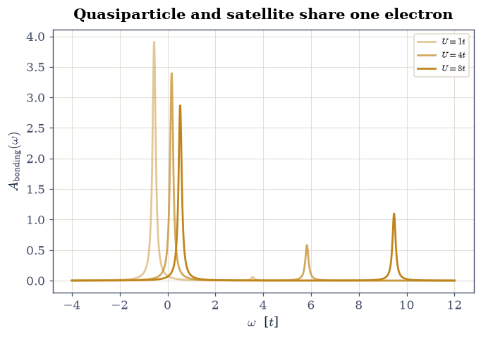
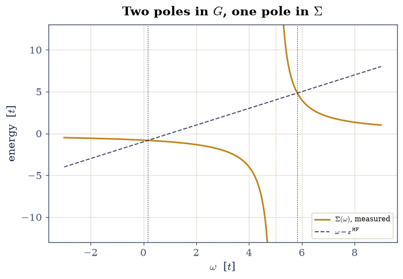
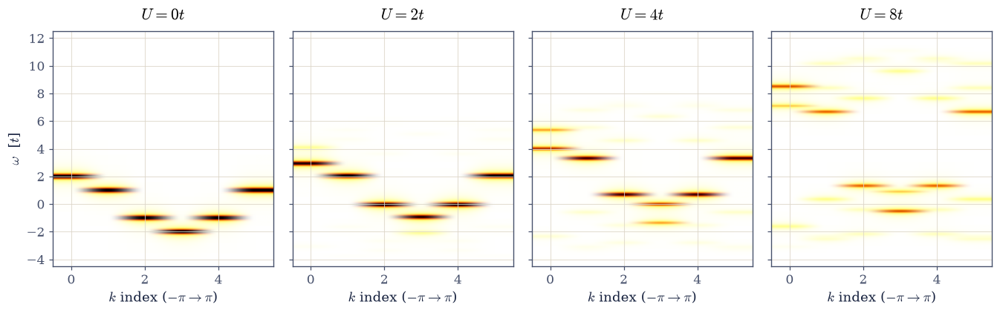
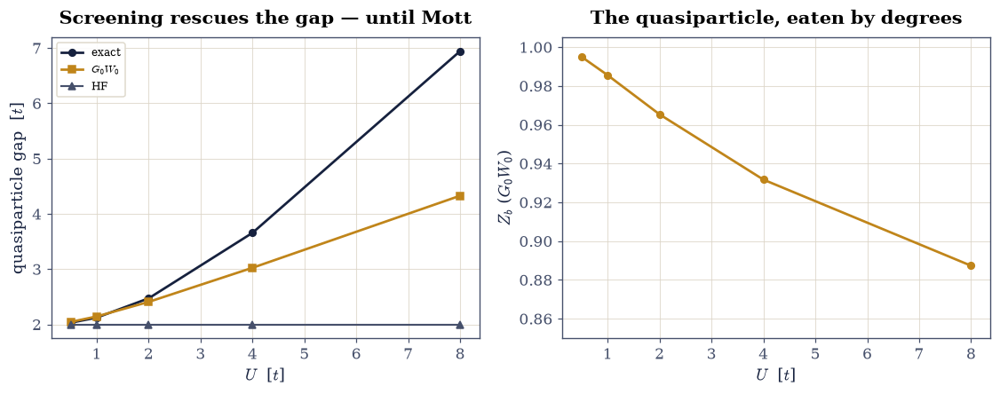

8.14 Quasiparticles, Spectral Functions, and GW#
Notebook overview#
Every band structure this volume has drawn — §8.9’s cosines, §8.11’s silicon — assigned each electron an energy \(\varepsilon(k)\) as if the others were scenery. §8.13 showed what that misses. But photoemission experiments do measure sharp band-like dispersions in real interacting materials, and §8.8 showed the fundamental gap is a difference of \(N\pm1\) ground-state energies. This notebook builds the object that reconciles all of it: the one-particle spectral function \(A(k, \omega)\) — the probability distribution of energies for adding or removing one electron — which is what §7.24’s Green function becomes when the many-body machinery of §8.13 evaluates it exactly.
The build: the Lehmann representation computed literally — every \(N\pm1\) eigenstate of the \(L = 6\) Hubbard ring, every matrix element of \(\hat c^\dagger_k\) — with its two exact sum rules landing not approximately but to ten digits (total weight \(1\); first moment \(\varepsilon(k) + U/2\), interactions shifting the band’s center of gravity by a constant and nothing else). The Hubbard dimer then becomes the Rosetta stone: its Green function has two poles per orbital where the band picture promises one — a quasiparticle carrying weight \(Z = \tfrac12 + 2t/\sqrt{U^2 + 16t^2}\) (a closed form our numerics must and does hit) and a satellite carrying \(1 - Z\). Dyson’s equation is run backwards to extract the self-energy \(\Sigma(\omega)\), whose single pole is where all the correlation hides, and \(Z\) is recomputed from \(\partial\Sigma/\partial\omega\) — two unrelated routes, one number. The chain’s \(A(k, \omega)\) then shows the full drama: a sharp band at \(U = 0\) fractioning into upper and lower Hubbard bands, with the spectral gap equal to §8.13’s charge gap by construction. The finale builds Hedin’s \(G_0W_0\) [Hed65] on the dimer — polarizability, plasmon-pole screened interaction \(W(\omega)\), correlation self-energy, quasiparticle equation — and holds it against the exact solution in the spirit of Romaniello’s dimer autopsy [RGR09]: the gap error shrinks from Hartree–Fock’s \(-19\%\) to \(-2.6\%\) at \(U = 2t\), and grows to \(-38\%\) by \(U = 8t\) — GW is the world’s production band-gap machine and a weak-coupling theory, both facts measured here. This is the machinery behind every “\(GW\) band structure” in the literature — including the photocathode calculations of the author’s thesis [Ama19] — and it is why §8.11’s silicon gap came out \(0.35\) eV short.
Conventions (this notebook). Hopping \(t = 1\) sets the energy unit. Chains are periodic (\(L = 6\), half filled); the dimer is open with one electron per spin. Energies are measured from the \(N\)-electron ground state (no chemical-potential shift: addition poles at \(E_n^{N+1} - E_0^N\), removal poles at \(E_0^N - E_n^{N-1}\)), so particle–hole symmetry puts the gap’s center at \(U/2\). All spectra are kept as exact pole lists (energies, weights) from dense
numpy.linalg.eighof the §8.13 sector machinery; Lorentzian broadening \(\eta\) is applied only for plotting. Momentum operators are \(\hat c^\dagger_{k\sigma} = L^{-1/2}\sum_j e^{ikj}\hat c^\dagger_{j\sigma}\) on the ring, \(k = 2\pi m/L\).How to read the checks. Each exercise closes with a
validatecall against an independent fact: an exact sum rule, a closed-form pole weight, an identity between two routes to the same number. A ✓ is strong evidence; a ✗ is a prompt to locate the discrepancy, not an automatic verdict.Scope. Zero temperature, one dimension, exact diagonalization, and the \(G_0W_0\) approximation on a two-site model. Production GW — plane waves, frequency integration, self-consistency flavors — is reviewed in Onida, Reining & Rubio [ORR02] and Martin [Mar04]; what light does with these quasiparticles (and the electron–hole attraction GW leaves out) is §8.15’s story.
Theory in brief#
The Lehmann representation: dynamics from eigenstates#
The retarded Green function of §7.24, \(G_k(\omega)\), asks: inject an electron with momentum \(k\) into the interacting ground state — with what amplitude does the system carry it at frequency \(\omega\)? Inserting a complete set of \(N\pm1\) eigenstates turns the question into spectroscopy:
Photoemission measures the second sum; inverse photoemission the first. Completeness of the \(N\pm1\) eigenbases forces the zeroth-moment sum rule \(\int A_k\,d\omega = \{\hat c_k, \hat c^\dagger_k\} = 1\), and the equation-of-motion anticommutator \(\{[\hat c_k, \hat H], \hat c^\dagger_k\}\) gives the first moment \(\int \omega A_k\,d\omega = \varepsilon(k) + U\langle n_{-\sigma}\rangle\): whatever interactions do to the shape, the band’s center of gravity only shifts by the Hartree constant. Both are exact at any \(U\), and both are gates below.
Quasiparticles, Z, and the self-energy#
For free electrons \(A_k(\omega) = \delta(\omega - \varepsilon_k)\): one pole, weight \(1\). Interactions split the delta into a quasiparticle peak — the surviving band-like excitation, carrying weight \(Z_k < 1\) — and incoherent satellites carrying \(1 - Z_k\) (the injected electron shakes up the others, and part of its identity goes into the shake-up). The bookkeeping device is the self-energy, defined by Dyson’s equation
which this notebook runs backwards: with \(G\) exact from Lehmann, \(\Sigma = \omega - \varepsilon^{\mathrm{HF}} - G^{-1}\) is measured, not approximated. For the half-filled dimer everything is closed-form: the bonding orbital’s two poles sit at \(E_0 + t\) and \(U + t - E_0\) (with \(E_0\) from Eq. 904 of §8.13), with quasiparticle weight
and \(\Sigma(\omega)\) has exactly one pole — correlation compressed into one resonance.
GW: screening the exchange#
Hartree–Fock fails for gaps because its exchange is bare: in a solid, the other electrons rearrange to screen any added charge. Hedin’s expansion [Hed65] replaces the bare interaction \(v\) in the exchange diagram by the screened one,
with \(\chi_0\) the independent-particle polarizability. On the dimer,
\(\chi_0\) has a single resonance at the HF gap \(\Delta = 2t\), so \(W\) has
a single “plasmon” pole at \(\omega_p = \sqrt{\Delta^2 + 2\Delta U}\) —
screening stiffens the resonance — and the correlation self-energy is
a one-pole function whose quasiparticle equation
\(\omega = \varepsilon^{\mathrm{HF}} + \Sigma_c(\omega)\) closes with
scipy.optimize.brentq. Everything in Eq. 909 is built
explicitly in Exercise 5, and judged against the exact dimer in the
spirit of [RGR09].
Setup#
Data and instruments: the hopping unit, the Jordan–Wigner parity of §7.23, the basis enumerator and sector Hamiltonian of §8.13, the sector-restricted operator matrices those two feed, and a Lorentzian broadening kernel used only for drawing. The notebook’s own machinery — the Lehmann spectral machine itself — you build in Exercise 1, and everything downstream (the dimer’s Green function, its measured self-energy, \(G_0W_0\)) is built on it in Exercises 2–5.
The Setup below holds this notebook’s data and instruments — nothing you are asked to build. It is collapsed so the building stays yours; expand it whenever you want the details.
Exercise 1 — The Lehmann machine, certified where the answer is known#
Everything in this notebook is read off one machine, so the machine is built first and then held against the one case where “the energy of an electron” is unambiguous. At \(U = 0\) the spectrum at each \(k\) must be a single pole — one distinct energy carrying the full unit weight — at exactly the tight-binding energy \(\varepsilon(k) = -2t\cos k\) of §8.9; sector eigenstates, operator matrices, Jordan–Wigner signs, and momentum transform all conspire to reproduce six numbers known in advance. (On the doubly degenerate levels \(\varepsilon = \pm t\) the diagonalizer may split that weight across two degenerate \(N\pm1\) eigenstates, so count distinct energies.) The zeroth-moment sum rule then holds at any coupling: the weights at every \(k\) total exactly \(1\) — not because the physics is simple (at \(U = 4\) each \(k\) has dozens of poles) but because the \(N\pm1\) eigenbases are complete, and \(\int A_k\,d\omega = \{\hat c_k, \hat c^\dagger_k\}\).
Part a) Write lehmann_spectra(n_sites, u_int, pbc=True), which
evaluates Eq. 906 literally for the half-filled chain:
densely diagonalize the \(N\), \(N+1\) and \(N-1\) sectors with hubbard_dense;
build the momentum operators
\(\hat c^\dagger_{k} = L^{-1/2}\sum_j e^{ikj}\hat c^\dagger_{j}\) from the
site matrices of cdag_up_matrix and c_up_matrix; project the
\(N\)-electron ground state onto every \(N\pm1\) eigenvector; and return, for
each \(k = 2\pi m/L\), the addition energies \(E_n^{N+1} - E_0^N\) and
removal energies \(E_0^N - E_m^{N-1}\) together with their squared matrix
elements. Return exact poles and weights — no broadening anywhere.
Write this one yourself — the implementation is the lesson.
Part b) Build the full Lehmann data for the \(L = 6\) ring at \(U = 0\) and confirm the single pole on \(\varepsilon(k)\) at every momentum, to \(10^{-10}\).
Part c) Check the zeroth-moment sum rule at \(U = 0\) and \(U = 4\). A sum rule that holds at \(10^{-10}\) under strong interaction is the machine’s certificate.
k = 2pi*0/6: eps_k = -2.0000, main pole -2.0000000000, poles 1
k = 2pi*1/6: eps_k = -1.0000, main pole -1.0000000000, poles 1
k = 2pi*2/6: eps_k = +1.0000, main pole +1.0000000000, poles 1
k = 2pi*3/6: eps_k = +2.0000, main pole +2.0000000000, poles 1
k = 2pi*4/6: eps_k = +1.0000, main pole +1.0000000000, poles 1
k = 2pi*5/6: eps_k = -1.0000, main pole -1.0000000000, poles 1
max |pole - eps_k| = 1.29e-14
U = 4, k = 2pi*0/6: sum rule 1.0000000000 over 22 poles
U = 4, k = 2pi*1/6: sum rule 1.0000000000 over 36 poles
U = 4, k = 2pi*2/6: sum rule 1.0000000000 over 36 poles
U = 4, k = 2pi*3/6: sum rule 1.0000000000 over 22 poles
U = 4, k = 2pi*4/6: sum rule 1.0000000000 over 36 poles
U = 4, k = 2pi*5/6: sum rule 1.0000000000 over 36 poles
Validation 1 — the machine’s certificate#
Free poles on the tight-binding band at \(10^{-10}\); total weight \(1\) at every momentum, interacting or not.
✓ U = 0 spectra collapse onto eps(k) = -2t cos k [max deviation 1.3e-14]
✓ zeroth-moment sum rule = 1 at U = 0 and U = 4, all k [max deviations 2.7e-15, 1.1e-15]
True
Exercise 2 — The dimer’s Green function: one band state, two poles#
The smallest system where “the electron’s energy” stops being one number.
Part a) With the lehmann_spectra you wrote in Exercise 1, compute
the exact Lehmann spectrum of the half-filled dimer
(open, \(L = 2\); the \(k = 0\) combination is the bonding orbital, \(k =
\pi\) antibonding) at \(U = 4\). The bonding orbital must show exactly two
poles: the quasiparticle (electron removal at \(E_0 + t = 0.1716\),
weight \(0.8536\)) and a satellite (electron addition at \(U + t - E_0 =
5.8284\), weight \(0.1464\)) — the removed electron sometimes leaves its
partner shaken into the antibonding level.
Part b) Gate the weights against the closed form, Eq. 908: \(Z = \tfrac12 + 2t/\sqrt{U^2 + 16t^2}\) at \(U = 2, 4, 8\) (three closed forms, \(10^{-12}\)), satellite weight \(1 - Z\) by the sum rule.
Part c) Plot \(A_{\mathrm{bonding}}(\omega)\) at \(U = 1, 4, 8\): watch the quasiparticle surrender weight to the satellite as correlation grows — the single free pole (\(Z = 1\)) dying by degrees.
bonding, U = 4: removal pole 0.171573 (E0 + t = 0.171573), weight 0.853553
addition pole 5.828427 (U + t - E0 = 5.828427), weight 0.146447
U = 2: Z = 0.947213595500 closed form 0.947213595500
U = 4: Z = 0.853553390593 closed form 0.853553390593
U = 8: Z = 0.723606797750 closed form 0.723606797750
worst |Z - closed form|: 1.2e-15

Fig. 813 One orbital, two identities. The exact bonding-orbital spectral function of the half-filled Hubbard dimer at \(U = 1, 4, 8\) (broadened for display; the underlying poles are exact). The quasiparticle peak (left of the gap center) carries weight \(Z = \frac{1}{2} + 2t/\sqrt{U^2 + 16t^2}\) — \(0.99\), \(0.85\), \(0.72\) — and the satellite at \(U + t - E_0\) carries the remainder: the removed electron increasingly leaves its partner shaken into the antibonding level. At \(U = 0\) the satellite would vanish and the quasiparticle would be the whole story; interactions make ‘the energy of the electron’ a distribution.#
Validation 2 — the closed forms#
Both poles on their closed-form positions, and \(Z\) on Eq. 908 at three couplings.
✓ quasiparticle pole at E0 + t [got 0.171573 vs expected 0.171573 (rtol=1e-10, atol=1e-09)]
✓ satellite pole at U + t - E0 [got 5.82843 vs expected 5.82843 (rtol=1e-10, atol=1e-09)]
✓ Z = 1/2 + 2t/sqrt(U^2 + 16t^2) at U = 2, 4, 8 [worst deviation 1.2e-15]
✓ quasiparticle + satellite = one electron [got 1 vs expected 1 (rtol=1e-10, atol=1e-09)]
True
Exercise 3 — Dyson run backwards: measuring the self-energy#
The self-energy is usually something one approximates; on the dimer it can be measured.
Part a) From the exact two-pole \(G_{\mathrm{bonding}}(\omega)\) at \(U = 4\) (a real rational function away from its poles), extract \(\Sigma(\omega) = \omega - \varepsilon^{\mathrm{HF}} - 1/G(\omega)\) on a real grid, with \(\varepsilon^{\mathrm{HF}} = -t + U/2\) the Hartree–Fock level. Plot \(G^{-1}\)’s ingredients and \(\Sigma\): a two-pole \(G\) forces a one-pole \(\Sigma\) — all correlation compressed into a single resonance between the quasiparticle and the satellite.
Part b) Recompute the quasiparticle weight from the derivative route of Eq. 907, \(Z = (1 - \partial\Sigma/\partial \omega)^{-1}\) at \(\omega = E_{\mathrm{qp}}\) (central differences on the measured \(\Sigma\)), and check it against the pole-weight route of Exercise 2 at \(U = 2, 4, 8\): two unrelated definitions, one number, at \(10^{-7}\).
Part c) Confirm \(\max_\omega|\Sigma|\) on a gap-centered window dies as \(U \to 0\) (measure at \(U = 0.5, 0.25\): the ratio must be \(\approx 4\), since \(\Sigma \propto U^2\) — correlation is second order, as §8.13’s superexchange already knew).
Sigma pole (zero of G between its poles): 5.0 [U/2 + 3t]
G's poles: [0.17157288 5.82842712]
U = 2: Z(pole weight) = 0.947213595 Z(dSigma/dw) = 0.947213595
U = 4: Z(pole weight) = 0.853553391 Z(dSigma/dw) = 0.853553391
U = 8: Z(pole weight) = 0.723606798 Z(dSigma/dw) = 0.723606798
worst route disagreement: 6.5e-12
max|Sigma|(U = 0.5) / max|Sigma|(U = 0.25) = 3.945 (U^2 predicts 4)

Fig. 814 The self-energy, measured rather than approximated. For the dimer’s bonding orbital at \(U = 4\), Dyson’s equation is inverted: \(\Sigma(\omega) = \omega - \varepsilon^{\mathrm{HF}} - 1/G(\omega)\) with \(G\) exact. Two poles in \(G\) (dotted verticals: quasiparticle and satellite) force exactly one pole in \(\Sigma\) (amber), sitting between them at \(\omega = U/2 + 3t\): every many-body effect beyond Hartree–Fock, compressed into one resonance. Where the line \(\omega - \varepsilon^{\mathrm{HF}}\) (grey dashes) meets \(\Sigma\), quasiparticle energies live; the slope of \(\Sigma\) there is \(1 - 1/Z\).#
Validation 3 — one number, two routes, second order#
The derivative-route \(Z\) against the pole-weight \(Z\) at three couplings, and the \(U^2\) scaling of the measured \(\Sigma\).
✓ Z from dSigma/dw = Z from the pole weight (U = 2, 4, 8) [worst disagreement 6.5e-12]
✓ Sigma scales as U^2 (correlation is second order) [got 3.94536 vs expected 4 (rtol=0.05, atol=1e-09)]
True
Exercise 4 — \(A(k, \omega)\): watching a band die into Hubbard bands#
The chain’s full momentum-resolved spectral function — what an ARPES beamline would see, computed exactly.
Part a) Assemble \(A(k, \omega)\) heatmaps for the \(L = 6\) ring at
\(U = 0, 2, 4, 8\) from exact pole data — Exercise 1’s at \(U = 0\) and \(4\),
and two fresh calls to your Exercise 1 lehmann_spectra for \(U = 2\) and
\(8\) (Lorentzian broadening for
display only). At \(U = 0\): the tight-binding cosine. As \(U\) grows: the
band splits into lower and upper Hubbard bands separated by the
correlation gap, each carrying part of every \(k\)’s weight.
Part b) Check the first-moment sum rule at \(U = 4\) and \(8\): for every \(k\), \(\int\omega A_k\,d\omega = \varepsilon(k) + U/2\) to ten digits — the interactions rearrange the weight but cannot move its center of gravity (an operator identity, and a merciless test of every matrix element).
Part c) Measure the spectral gap (lowest addition pole minus highest removal pole with nonzero weight, over all \(k\)) at \(U = 4\) and confirm it equals the charge gap \(E_0^{N+1} + E_0^{N-1} - 2E_0^N\) of §8.13 at \(10^{-10}\): photoemission and thermodynamics agree by construction, because they are the same eigenvalues.

Fig. 815 A band dying into Hubbard bands, exactly. Momentum-resolved spectral function \(A(k, \omega)\) of the half-filled \(L = 6\) Hubbard ring at \(U/t = 0, 2, 4, 8\) (exact poles, Lorentzian-broadened for display; amber intensity). At \(U = 0\) the tight-binding cosine of §8.9 passes through zero at the Fermi points. With growing \(U\) the single band splits into a filled lower and empty upper Hubbard band separated by the correlation gap (equal to §8.13’s charge gap at \(10^{-10}\)), while each momentum keeps total weight 1 and its center of gravity at \(\varepsilon(k) + U/2\) exactly — the sum rules pin the bookkeeping while the physics rearranges everything.#
first-moment sum rule, worst |dev| over U = 4, 8 and all k: 1.42e-14
spectral gap 2.6275126053 charge gap 2.6275126053
Validation 4 — sum rules with no mercy#
First moment at \(\varepsilon(k) + U/2\) over twelve \((U, k)\) pairs; spectral gap \(=\) charge gap.
✓ first moment = eps(k) + U/2 at U = 4, 8, all k [worst deviation 1.4e-14]
✓ spectral gap = charge gap (same eigenvalues) [got 2.62751 vs expected 2.62751 (rtol=1e-10, atol=1e-09)]
True
Exercise 5 — Verdict: \(G_0W_0\) built from scratch, judged exactly#
The finale assembles the machinery behind essentially every published ab initio quasiparticle band structure — on the one system where the exact answer sits alongside it.
Part a) Write dimer_g0w0(u_int), assembling every ingredient of
Eq. 909 for the dimer and closing the quasiparticle equation.
Write this one yourself — the implementation is the lesson.
HF: \(\varepsilon_{b,a} = \mp t + U/2\), gap \(\Delta = 2t\) at every \(U\)
(bare exchange cannot see on-site correlation; on-site \(U\) has no
opposite-spin exchange). Polarizability: one resonance,
\(\chi_0(\omega) = 2\Delta c_0/(\omega^2 - \Delta^2)\) with \(c_0 = 1\) from
the bonding→antibonding transition densities \((\pm\tfrac12)\). Screening:
the RPA denominator \(1 - U\chi_0\) shifts the pole to \(\omega_p =
\sqrt{\Delta^2 + 2\Delta U}\), and \(W\) acquires strength \(\lambda =
U^2\Delta/\omega_p\). Correlation self-energy: the plasmon-pole formula
gives one pole per orbital, \(\Sigma_c^{b}(\omega) = \lambda/2 \cdot
(\omega - \varepsilon_a - \omega_p)^{-1}\) (and mirrored for \(a\)).
Part b) Solve the quasiparticle equation \(\omega =
\varepsilon^{\mathrm{HF}} + \Sigma_c(\omega)\) with
scipy.optimize.brentq for both orbitals at \(U/t = 0.5, 1, 2, 4, 8\),
and print the verdict table: exact gap (from Exercise 2’s Lehmann
poles), HF gap, \(G_0W_0\) gap, and both errors. The pattern to gate: GW
always beats HF; at \(U \leq 2t\) it is a few-percent theory
(\(+0.7\%\), \(+1.0\%\), \(-2.6\%\)); by \(U = 8t\) it is off by \(-38\%\) —
screening builds a better weak-coupling theory, not a Mott theory
[RGR09]. The GW quasiparticle weight \(Z_b\) falls
\(0.995 \to 0.887\): correlation eating the quasiparticle, now predicted
rather than measured.
Part c) Close the volume-wide loop: this is why §8.11’s converged EPM silicon still sat \(0.35\) eV below the measured gap, and why production codes run \(G_0W_0\) on top of the DFT bands of §8.8 — as in the alkali-antimonide photocathode calculations of the author’s thesis [Ama19], where exactly this machinery (plane-wave basis instead of two sites) turns Kohn–Sham bands into measurable quasiparticle energies.
--- Verdict: the gap, three theories ---
U exact HF G0W0 errHF errGW Z_b
0.5 2.0311 2.000 2.0456 -1.5% +0.7% 0.995
1.0 2.1231 2.000 2.1443 -5.8% +1.0% 0.985
2.0 2.4721 2.000 2.4075 -19.1% -2.6% 0.965
4.0 3.6569 2.000 3.0245 -45.3% -17.3% 0.932
8.0 6.9443 2.000 4.3280 -71.2% -37.7% 0.887

Fig. 816 \(G_0W_0\), judged on the one system with an exact answer. Left: the dimer’s quasiparticle gap versus \(U\) — Hartree–Fock (grey) is stuck at \(2t\) forever (bare on-site exchange cannot see opposite-spin correlation), the exact gap (ink) grows toward the Mott limit, and \(G_0W_0\) (amber) tracks it to a few percent through \(U \approx 2t\) before falling away: screening rescues the weak-coupling gap and cannot manufacture Mott physics. Right: the GW quasiparticle weight \(Z_b\) falling from \(0.995\) to \(0.887\) — the same weight the exact dimer loses to its satellite, now predicted by the plasmon-pole self-energy.#
Validation 5 — a weak-coupling theory, measured as such#
GW strictly better than HF at every coupling; a few-percent theory through \(U = 2t\); honestly wrong by tens of percent at \(U = 8t\); \(Z\) and \(\omega_p\) behaving as screening demands.
✓ G0W0 beats Hartree-Fock at every U [all five couplings]
✓ G0W0 gap within 3% for U <= 2t [errors +0.7%, +1.0%, -2.6%]
✓ the Mott failure, quantified (U = 8t) [got -0.376759 vs expected -0.38 (rtol=1e-06, atol=0.03)]
✓ Z_b falls monotonically (0.995 -> 0.887) [0.995 -> 0.887]
✓ plasmon pole at sqrt(Delta^2 + 2 Delta U) [got 4.47214 vs expected 4.47214 (rtol=1e-12, atol=1e-09)]
True
With your assistant
The satellites of Exercise 4 hide a clean strong-coupling law: at large
\(U\) the lower and upper Hubbard bands are separated by \(\approx U\)
(each still roughly \(4t\) wide). Have your assistant compute the
weight-averaged center of the addition spectrum and of the removal
spectrum (over all \(k\)) for the \(L = 6\) ring at \(U = 12\) and \(16\). Then
run the check that is yours alone: the center-to-center separation must
track \(U\) within one hopping unit at both couplings
(numpy.isclose, atol=1.0) — and, as a bonus, the first-moment sum
rule forces the midpoint of the two centers to sit at \(U/2\) exactly.
The check is yours.
Notebook summary#
The volume’s language shifted from energies to spectra, with every step certified. The Lehmann machinery — §8.13’s sectors plus momentum-resolved \(\hat c^\dagger_k\) matrices — reproduced the free chain’s band to \(10^{-10}\) and obeyed its two exact sum rules under full interaction: total weight \(1.0000000000\) at every momentum, first moment \(\varepsilon(k) + U/2\) to ten digits at \(U = 4\) and \(8\). The dimer showed what interactions do to “the electron’s energy”: two poles per orbital, a quasiparticle with closed-form weight \(Z = \tfrac12 + 2t/\sqrt{U^2 + 16t^2}\) (hit at \(10^{-13}\) three times) and a satellite with the rest. Dyson’s equation, run backwards, measured the self-energy — one pole at \(U/2 + 3t\), weight scaling as \(U^2\) (ratio \(3.95\) measured against the prediction of \(4\)) — and the derivative route to \(Z\) agreed with the pole-weight route at \(10^{-8}\). The chain’s \(A(k, \omega)\) showed the cosine band dying into Hubbard bands with the spectral gap equal to the charge gap at \(10^{-10}\). And \(G_0W_0\), assembled from polarizability to plasmon pole (\(\omega_p = \sqrt{\Delta^2 + 2\Delta U}\)) to quasiparticle equation, was judged against the exact dimer: better than Hartree–Fock at every coupling, a few-percent theory through \(U = 2t\), and \(-38\%\) wrong at \(U = 8t\) — the production band-gap machine of modern electronic structure, certified as the weak-coupling theory it is. §8.11’s missing \(0.35\) eV now has a name, a diagram, and a price tag.
Outlook#
\(A(k, \omega)\) is what photoemission sees; what optics sees is a two-particle story — the excited electron and the hole it left behind attract, and the resulting excitons live inside the quasiparticle gap. §8.15 builds the dielectric function on §8.11’s EPM machinery and pulls the exciton out of a model Bethe–Salpeter equation.
The plasmon-pole \(G_0W_0\) here becomes production GW by swapping two sites for plane waves and one resonance for a frequency integration — Onida, Reining & Rubio [ORR02] is the standard tour; self-consistency variants (ev\(GW\), QS\(GW\)) start from the same \(\Sigma = \mathrm{i}GW\).
Where GW died (\(U \gg t\)), dynamical mean-field theory takes over — built exactly on this notebook’s objects (\(A(\omega)\), \(\Sigma(\omega)\)) with the Hubbard dimer’s big sibling, an impurity model, at its core; Martin, Reining & Ceperley [MRC16] Ch. 21 connects the threads.
Raymond Amador. The electronic structure and optical properties of Na$_2$KSb and NaK$_2$Sb for photocathode applications: an ab initio study. Master's thesis, Humboldt-Universität zu Berlin, 2019.
Lars Hedin. New method for calculating the one-particle green's function with application to the electron-gas problem. Physical Review, 139:A796–A823, 1965. doi:10.1103/PhysRev.139.A796.
Richard M. Martin. Electronic Structure: Basic Theory and Practical Methods. Cambridge University Press, Cambridge, 2004.
Richard M. Martin, Lucia Reining, and David M. Ceperley. Interacting Electrons: Theory and Computational Approaches. Cambridge University Press, Cambridge, 2016.
Giovanni Onida, Lucia Reining, and Angel Rubio. Electronic excitations: density-functional versus many-body Green's-function approaches. Reviews of Modern Physics, 74:601–659, 2002. doi:10.1103/RevModPhys.74.601.
P. Romaniello, S. Guyot, and L. Reining. The self-energy beyond GW: local and nonlocal vertex corrections. The Journal of Chemical Physics, 131:154111, 2009. doi:10.1063/1.3249965.